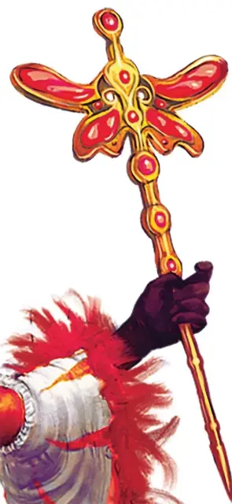

Флюгер Сумеречного света
Witchlight Vane
Чудесный предмет, легендарный (требуется настройка мистером Лайтом или его избранным преемником)

Рекомендованная стоимость от 50 001 зм
Этот богато украшенный жезл увенчан парой крыльев бабочки, а также инкрустирован по всей длине кусочками красного стекла. Он весит 3 фунта.
Магическое оружие. В руках того, кто настроен на него, флюгер может использоваться как магическая булава, которая даёт бонус +3 к броскам атаки и урона, совершённым с её помощью. Кроме того, флюгер дополнительно наносит 1к8 урона излучением при попадании.
Чувствуя настроение. Пока флюгер находится внутри территории Карнавала Сумеречного света, он может чувствовать настроение каждого существа на карнавале, обладающего Интеллектом 4 или выше. Действием существо, настроенное на флюгер, может использовать его, чтобы точно определить местоположение самого счастливого существа на карнавале.
Фигура бабочки в верхней части жезла медленно вращается по часовой стрелке, когда настроение на карнавале приподнятое; если общее настроение на карнавале печальное, верхняя часть флюгера медленно вращается против часовой стрелки.
Разум. Флюгер—это разумный, хаотично-добрый чудесный предмет с Интеллектом 11, Мудростью 14 и Харизмой 14. Он обладает нормальным слухом и зрением на расстоянии до 30 футов, и он общается, передавая эмоции существу, настроенному на него. Его цель—убедиться, что все участники Карнавала Сумеречного света хорошо проводят время.
Дополнительные свойства. Флюгер обладает следующими дополнительными свойствами:
- Существо, держащее флюгер, получает уязвимость к урону электричеством.
- Существо, настроенное на флюгер, нельзя ослепить, оглушить, окаменеть или ошеломить.
- Пока существо настроенное на флюгер, носит его с собой, оно может действием наложить заклинания пляшущие огоньки [dancing lights], превращение [polymorph] или луч холода [ray of frost], без использования компонентов заклинания и используя Харизму в качестве заклинательной характеристики. После того, как заклинание превращение [polymorph] будет наложено с помощью флюгера, бросьте к8; при результате «3» или «8» вы не можете наложить это заклинание повторно с помощью флюгера, пока не закончите продолжительный отдых.